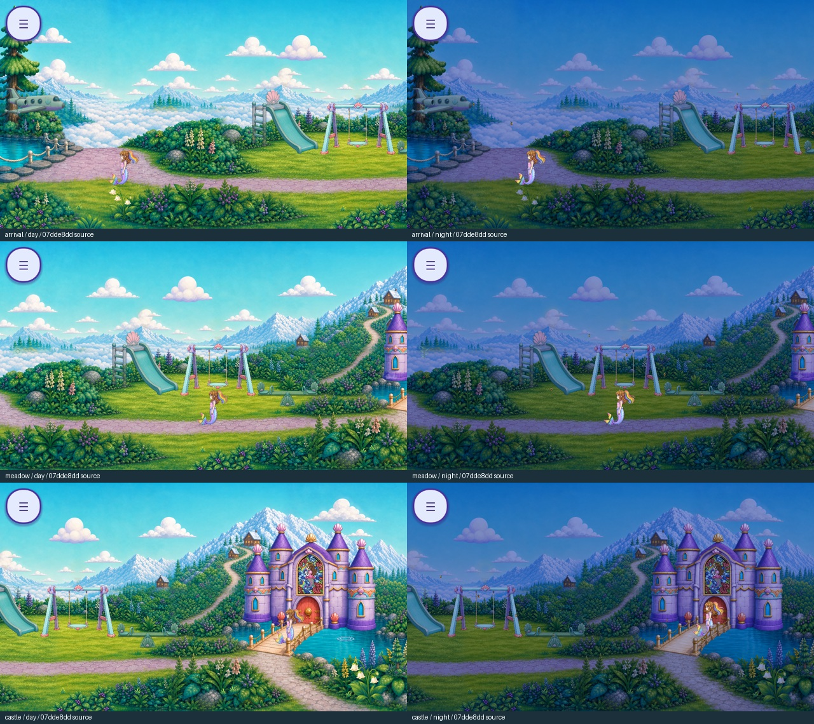
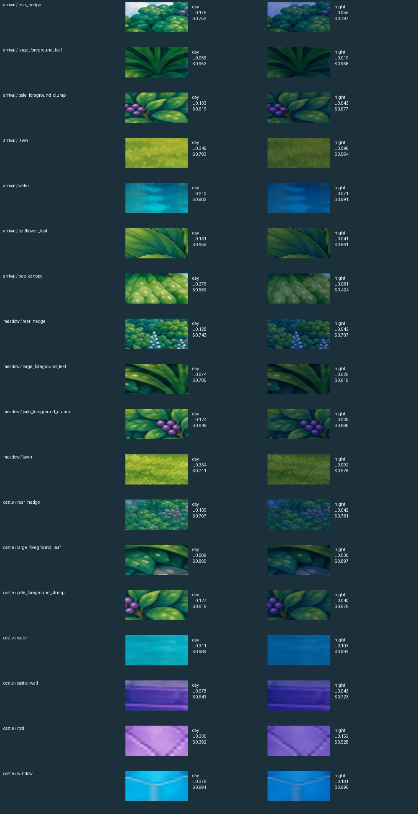
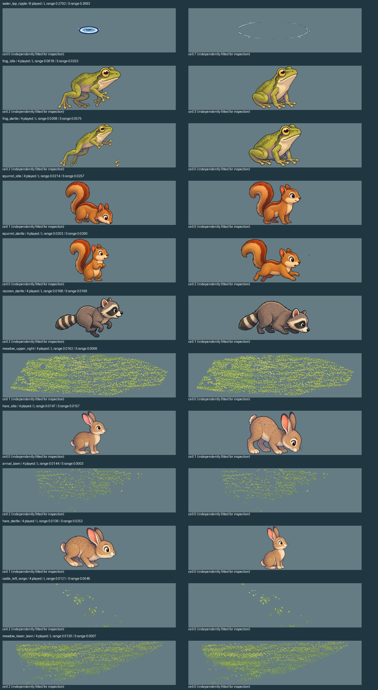

Sky Lagoon: color remains an open finding
Source checkpoint 07dde8dd. Latest owner rating: 3.5/5. No new rating or visual acceptance claimed.
Six current Mobile views, 48 material locations, 46 source atlases and 240 played cell slots. Scene crops include mixed materials; temporal metrics rank inspection needs, not defects.

Material decisions
P1 / Foreground foliage / rear hedgesSmooth rounded foreground clumps have pale highlights and lower saturation than the fine, dappled rear hedge. Large pointed foreground leaves are darker. A universal foreground brightness or saturation adjustment would push one family further out of balance.
Match leaf shape and painted highlight width first; then grade only the offending leaf material. Preserve the purple berries and intentional front-to-back contrast.
The 07dde8dd preview replaces two pale berry owners with eight-cel pointed/dappled plants. Other foliage families remain separate review targets; this does not establish foreground/background acceptance.P1 / Night foliageLarge foreground leaves lose internal shadow detail at night. This is a value-range and ambient-tint problem, not a reason to brighten every leaf or change the whole night palette.
Test a restrained leaf-shadow lift against its adjoining hedge in all three views. Keep roots and gaps dark enough to read depth.
Existing night-only leaf lift was too localized to resolve the scene; not selected.P1 / Lawn and animated grassYellow-green lawn marks remain much brighter than many foreground leaf masses, and sparse bright moving flecks do not describe coherent whole grass.
Anchor grass colors to its own lawn patch, animate complete connected tufts and preserve quieter grass around paths. Review root shade and blade highlights across every cel.
One accent tuft is implemented; broad ground-cover motion and cross-screen lawn coherence remain open.P2 / Flowers and berriesCream/yellow flowers are strong local accents, especially beside the castle. Purple berry identity is useful, but repeated pale clusters draw a visual rhythm unrelated to the planting groups.
Keep cream, pink and purple distinct. Limit repeated pale clusters and align each flower group with a plausible supporting plant; no global desaturation.
Needs grouped planting review and whole-cel comparisons.P2 / Sky, high clouds, cloud sea and mountainsCool distance colors support depth. Some high cloud cards have broader purple shadow lobes than the fine cloud sea. Equalizing their contrast would flatten the panorama.
Compare cloud shadow hue and edge softness at drift extremes while retaining lower contrast in the distant banks.
Twelve cloud cards now have multiple cels; the low cloud sea remains an unintegrated motion study.P2 / Water and shore stonesCyan water reads clearly against lavender/grey shore stones. Darker water gives the bridge a useful boundary; bright ripple highlights need event-state review.
Preserve shore continuity; audit ripple onset/peak/fade and water cels for hue or luminance pumping, separately from fixed shoreline samples.
These six stills do not establish all water interaction states.P2 / Paths, left castle approach and bridgeLavender main paths and the pale warm bridge remain distinguishable in these views. The left uphill approach is deliberately less prominent, but must remain discoverable.
Protect the route palette and path clearances during plant edits; inspect bridge flex/contact poses and path edges at all camera positions.
No route recoloring proposed from these samples alone.P2 / Castle walls, roofs, gold and windowsPurple architecture and warm trim form a coherent focal point. Night ambient tint dims windows and reflective accents with opaque surfaces; those materials need independent treatment.
Retain original cyan glass identity; test independent night material brightness without changing walls, warm trim or the protected portrait.
A separate ten-window alpha-mask trial has pixel-exact rollback in two GPU views. Selected for opt-in integration, not integrated at this checkpoint.P2 / Playground, tree and propsMuted aqua playground surfaces fit the cool landscape. Their broad smooth paint differs from foliage detail, appropriately for another material; lighting consistency still needs contact-state review.
Preserve material distinction. Check shared night tint, contact shadows and side-by-side duplicates at camera overlaps.
Do not force props to match plant saturation.OPEN / Roshan, animals, portrait, HUD and interaction cuesRoshan and HUD stay bright at night, aiding visibility. They are not environmental palette targets. The portrait contains many identity colors, so a single rectangle average has no grading authority.
Preserve protected colors. Audit cue visibility at action peaks and phone size, with actors and HUD shown in context.
Actor samples are mixed-pixel diagnostics only; animal, transient cue, device and owner acceptance remain open.View matched-location day/night material crops

Animation color variation
Different poses expose different paint and transparent coverage. Large ranges require visual review; small ranges do not prove good animation. Cells below are independently fitted to make their paint inspectable.

| Atlas | Played slots | Unique visible | L range | S range |
|---|
| water_tap_ripple | 8 | 8 | 0.2792 | 0.2693 |
| frog_idle | 4 | 4 | 0.0618 | 0.0253 |
| frog_startle | 4 | 4 | 0.0268 | 0.0575 |
| squirrel_idle | 4 | 4 | 0.0214 | 0.0257 |
| squirrel_startle | 4 | 4 | 0.0202 | 0.0260 |
| raccoon_startle | 4 | 4 | 0.0168 | 0.0169 |
| meadow_upper_right | 4 | 4 | 0.0162 | 0.0006 |
| hare_idle | 4 | 4 | 0.0147 | 0.0157 |
| arrival_lawn | 4 | 4 | 0.0144 | 0.0003 |
| hare_startle | 4 | 4 | 0.0136 | 0.0252 |
| castle_left_verge | 4 | 4 | 0.0121 | 0.0046 |
| meadow_lower_lawn | 4 | 4 | 0.0120 | 0.0007 |
| meadow_upper_left | 4 | 4 | 0.0117 | 0.0005 |
| raccoon_idle | 4 | 4 | 0.0075 | 0.0342 |
| bridge_contact | 12 | 11 | 0.0074 | 0.0057 |
| otter_idle | 4 | 4 | 0.0055 | 0.0583 |
| arrival_bank_left | 4 | 4 | 0.0036 | 0.0041 |
| meadow_high_right | 3 | 3 | 0.0034 | 0.0003 |
| otter_startle | 4 | 4 | 0.0033 | 0.0225 |
| castle_right_verge | 4 | 4 | 0.0027 | 0.0067 |
| arrival_high_right | 3 | 3 | 0.0027 | 0.0031 |
| bellflower | 8 | 8 | 0.0026 | 0.0021 |
| water_surface_arrival | 12 | 12 | 0.0017 | 0.0001 |
| arrival_high_left | 3 | 3 | 0.0017 | 0.0003 |
| meadow_hedge_left | 4 | 4 | 0.0016 | 0.0043 |
| bridge_chains | 12 | 10 | 0.0014 | 0.0018 |
| meadow_small_far | 4 | 4 | 0.0011 | 0.0000 |
| arrival_whole_tree | 12 | 12 | 0.0010 | 0.0047 |
| castle_approach_bank | 4 | 4 | 0.0009 | 0.0042 |
| huckleberry | 8 | 8 | 0.0008 | 0.0034 |
| water_surface_castle | 12 | 12 | 0.0007 | 0.0001 |
| arrival_bank_right | 4 | 4 | 0.0006 | 0.0042 |
| meadow_mid_right | 4 | 4 | 0.0006 | 0.0000 |
| arrival_small_center | 4 | 4 | 0.0006 | 0.0000 |
| arrival_mid_right | 4 | 4 | 0.0006 | 0.0000 |
| castle_high | 3 | 3 | 0.0006 | 0.0007 |
| meadow_high_left | 4 | 4 | 0.0006 | 0.0000 |
| meadow_hedge_right | 4 | 4 | 0.0005 | 0.0027 |
| conifer_breeze | 6 | 6 | 0.0005 | 0.0039 |
| meadow_boundary_berry_fan | 8 | 8 | 0.0003 | 0.0020 |
| castle_foreground_rosette | 6 | 6 | 0.0003 | 0.0005 |
| castle_far_bank | 4 | 4 | 0.0002 | 0.0036 |
| arrival_front_edge | 4 | 4 | 0.0002 | 0.0002 |
| meadow_small_left | 4 | 4 | 0.0000 | 0.0001 |
| arrival_small_right | 4 | 4 | 0.0000 | 0.0002 |
| meadow_small_center | 4 | 4 | 0.0000 | 0.0001 |
Source hashes, every cel measurement, findings and remaining evidence
No runtime recoloring in this audit. Device, full-pan, contact-state and owner acceptance remain open.